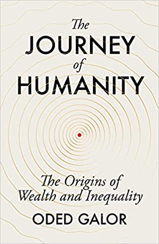

The Journey of Humanity

The Journey of Humanity
Penguin Random House, 2022
Why have living standards improved so dramatically over the past two centuries, after millennia of stagnation? And why has this transformation benefited some parts of the world far more than others? The Journey of Humanity traces the evolution of human societies from the earliest human settlements to the present, revealing the hidden forces that governed the transition from stagnation to growth and the emergence of inequality across the globe.
“Unparalleled in its scope and ambition” — Washington Post
“An optimist’s guide to the future” — The Guardian
“A sweeping overview…reminiscent of Sapiens” — Financial Times
“A great historical fresco” — Le Monde
“Astounding in scope and insight” — Nouriel Roubini
“Completely brilliant and utterly original” — Jon Snow
“Masterful” — Lewis Dartnell
“A page-turner, a suspense-filled thriller…” — Glenn Loury
International Bestseller · Published in 30 Languages
The Times Best Philosophy and Ideas Books 2022 · Yaesu Book Award 2023, Grand Prize — Japan · Author of the Year 2022 — CITIC, China